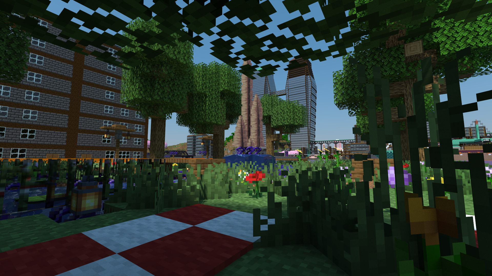
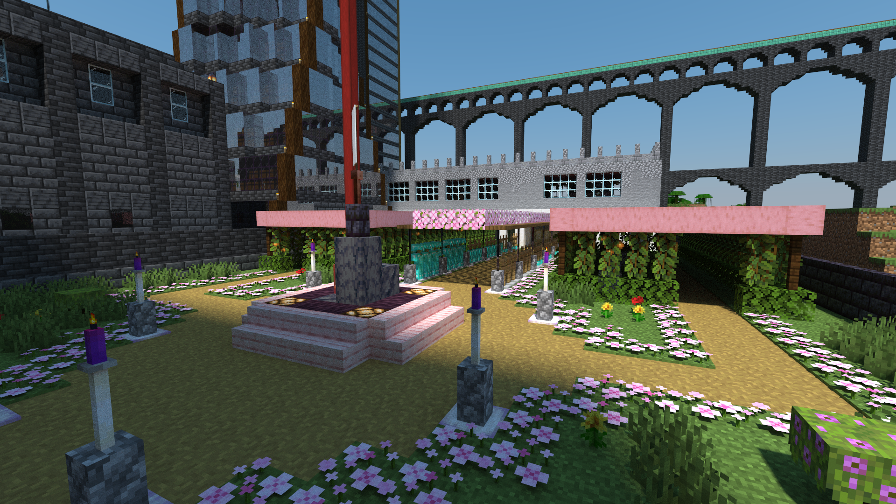
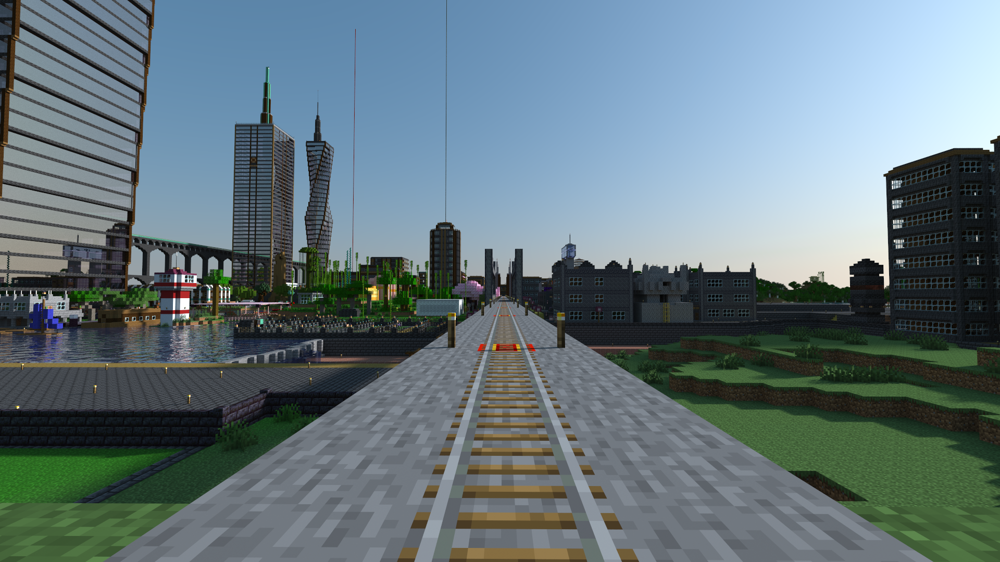
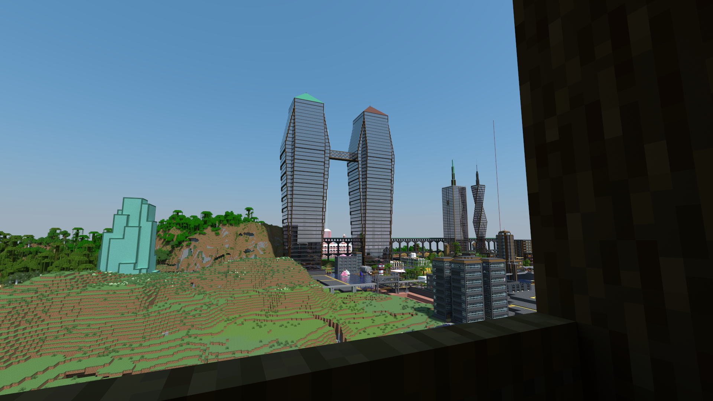
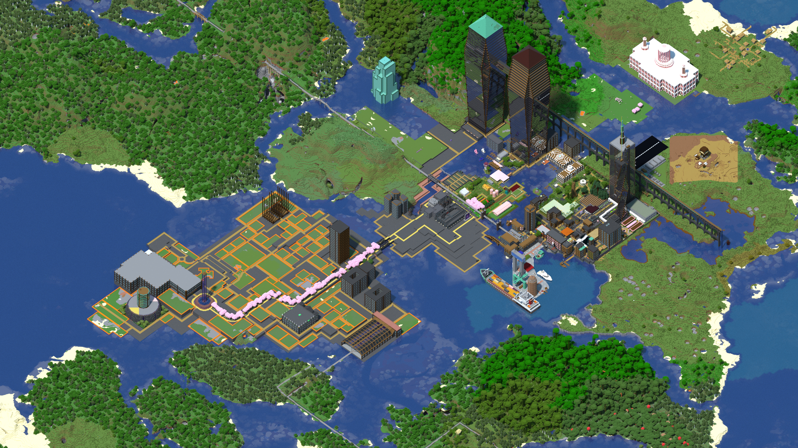

A cidade de Urbo, tamén chamada Kuprafontano, a cidade de pizarra e cobre ou a xoia do ecuador, é unha cidade situada no ecuador do praneta de Tesla, e é capital da rexión homónima. É unha importante cidade industrial, que conta ademais ca base militar urbana mais grande do país.
Está ubicada no mar Maro, e é un dos núcreos urbanos mais importantes do Comisariado de Eridanus e o segundo mais importante de Tesla, detrás da cidade de Providenco. No ano 2520 contaba según o censo oficial con 52 386 728 habitantes. É a sede da Compañía Miñeira de Tesla e do Instituto Nacional de Estudos LGBTQ+.
A cidade está ubicada nun arquipelago de illas situadas entre o Océano Meridional e o Oceáno Septentrional. As propias illas son chás, mais na illa de Estuaro destacan o monte dos namorados, onde se ubica o parque do mesmo nome, e o pico da selva, onde se situa o punto mais elevado da cidade.
O clima natural de Urbo é o clima tropical, e onde agora se situa a cidade encontrábanse antes xunglas e densos bosques, que foron despexados para construir a cidade.
O casco histórico da cidade, así coma a súa base militar, sitúanse na illa de Urbo. O templo maior da cidade, así coma varios dos seus barrios mais pequenos sitúanse na illa de Estuaro. O barrio de Novartalo sitúase na illa de Betulo, mentres que o distrito financieiro se situa na illa de Malebetulo. O porto da cidade xunto co barrio portuario situase na illa de Apudla Monteto.
Durante os primeiros anos da urbe, non tiña nome propio, pois os primeiros habitantes non se daban decidido entre os nomes de "Kuprafontano" (Fonte de Cobre) e "Interdujoce" (Entre dous oceanos). Mais niste periodo, a xente de asentamentos darredor achegabase á daquela pequena cidade a comerciar, dicindo que baixaban á "Urbo" (Cidade). O nome popularizouse entre a propia xente de Urbo, e así empezou a aparecer nos mapas. Para cando se decidira chamala oficialmente Kuprafontano, o nome de Urbo xa se establecera coma o nome da cidade.
Ainda así, moitos artistas e algúns historiadores se referiren á cidade coma Kuprafontano, e o consistorio aceptou o nome coma válido no 2403.
Hai probas arqueolóxicas de que na área onde hoxe se situa o casco histórico da cidade existira arredor do ano 2287 un pequeno asentamento, consistente de dúas vivendas, que foi destruido arredor do ano 2289 por unha das inundacións periódicas que sofre de forma regular a illa de Urbo. O asentamento era particularmente vulnerabel a istas inundacións ao estar construido nun desagüe natural.
No ano 2290 comeza en Tesla un periodo coñecido coma "A febre do cobre", que se caracterizou pola rápida colonización do praneta grazas aos seus abundantes xacementos de cobre. Nise mismo ano, uns pescadores da vila de Surla Monto, recolleron do mar Maro unha pébeda de cobre de 12.3 kilogramos. Isto levou á creación do rumor de que arredor do mar Maro debía de haber importantes depósitos de cobre.
Con iste rumor en mente, o 14 de febreiro de 2291 aséntase no agora casco histórico a propietaria da empresa miñeira TunelAR, Mel Fernsby. Fernsby levara consigo instrumentos de sondaxe para buscar as reservas de cobre que supostamente había debaixo da illa de Urbo. Nun periodo de 3 meses sondeou gran parte da illa en busca de cobre, sen moito éxito.
Mentres ela levaba a cabo as súas labores de sondaxe, outras persoas interesadas nos rumores tamén comenzaron a chegar á aldea, que daquela carecia de nome. Para marzo de 2291, o asentamento contaba xa con 50 habitante, e os urbeños daquela comezaron a labrar a terra para deixar de ter que depender doutras aldeas. Os restos distes cultivos estan reflictidos na Horta Urbana de Urbo, que ainda se usa coma lugar de socialización hoxe en día.
Mel Fernsby nunca atoparía o cobre que estaba a buscar, pois o mar de Maro é de feito bastante pobre niste material. Pese ao seu fracaso miñeiro, para xuño dise ano, a aldea crecera ata os 250 habitantes, polo que Fernsby tomou a decisión de conformala oficialmente coma concello según a Lei de Reasentamento Colonial, quedando a cidade oficialmente fundada o día 24 de Xuño de 2291.
 |
O Parque da República Española, onde ten lugar o aninovo dende 2309. |
Ao quedar a cidade oficialmente fundada, asignáronselle burocratas para dirixir os proxectos da cidade ata a súa conformación oficial coma concello. Durante iste periodo, a persoa mais involucrada no desenvolvemento da cidade sería a propia Fernsby, mais no momento da súa conformación a cidade contaba con 200 burócratas dedicados.
O primeiro problema co que se atopou o asentamento foi o do crecemento. En apenas 6 meses a vila acatara xa os 800 habitantes, e quedara bastante claro que o crecemento da urbe iba a continuar no futuro próximo. Coma consecuencia, planeouse o barrio do Ensanche, que hoxe en día é un dos barrios mais turísticos da cidade. Os edificios do ensanche foron construidos cunha fachada de pizarra, pois coma a cidade se situa enriba dun xacimento diste mineral, era a opción mais barata. As fachadas de pizarra da cidade fixéronse rapidamente famosas na rexión, e a súa popularidade no barrio do ensanche influiu na construcción do resto da urbe.
Tamén foi durante ista época que o asentamento se estaba consolidando coma zona de comercio, polo que se construiu o mercado de Urbo, así coma o porto histórico da cidade, que inicialmente era usado para pequenas mercancías e pesca, e que hoxe en día é un porto turístico; e a igrexa do centro histórico.
No ano 2293 a cidade expandírase ata os 3 600 habitantes, e o barrio do ensanche comezaba a quedarse pequeno. Por ende, preparouse a urbanización dun novo barrio ao este da cidade. Durante a urbanización do barrio, coa construcción da cloaca de Urbo, descubrironse os restos do anterior asentamento, que quedaron expostos ao aire libre no novo barrio, dandolle así o nome de Barrio das Ruinas.
Os edificios do novo barrio, onde priorizaba a velocidade á calidade, foron feitos con madeira de pino, tendo unhas fachadas moi distintas ás do resto da cidade. Ademais, os edificios diste barrio son os que conforman a famosa Fachada do mar Maro, que foi a inspiración da Fachada do océano Meridional.
Coa finalización do Barrio das Ruinas, a poboación de Urbo subiu ata os 12 300 habitantes, situándose xa nas dez mais poboadas do praneta. Coma consecuencia do seu crecemento, o Comisariado de Transportes construiu un nexo de portais na cidade, conectandoa ca rede do país e axudándolle a crecer ainda mais rápido.
Debido ao aumento do comercio que estaba experimentando o asentamento, decidiuse construir o Gran Mercado de Urbo, para facilitar o comercio na cidade. Arredor dista época aparece tamén a prantación de pinos, anexa ao mercado.
O 8 de marxo de 2295, o Comisariado de Defensa, anuncia que comprará preto do 80% do terreo da illa de Urbo, desenvolsando o custo da compra directamente nas arcas da cidade. O exército instala inicialmente nos seus terreos un aeródromo así coma uns pequenos cuarteis, e nun comezo usará os seus terreos para o entrenamento de novos recrutas. Coa instalación do exército na illa construese tamén o coñecido Muro de Urbo.
Ao ano seguinte, o porto histórico xa non daba a basto para o tráfico que soportaba a cidade, polo que se pide que o Ministerio de Fomento construa un novo porto con mais capacidade. O ministerio acepta, e comezase o construir o que hoxe é o porto vello. A construcción do porto desatou unha crise diplomática con Xar, pois Xira, a capital do praneta, pedira construir un novo porto de características similares e o ministerio negárallo argumentando que non sería viable. A crise non sería resolta ata o ano 2301.
No ano 97, crease o Barrio de Servizos municipais, onde se situaron a comisaria de policía e os edificios Seikos, un rañaceos privado, e Speir, un rañaceos de propiedade púbrica onde se situan ainda hoxe en día moitas axencias importantes coma o arquivo municipal, a sucursal principal do banco de Eridanus, ou a delegación do goberno central na cidade.
Anexo ao barrio de servizos, a Igrexa Oficial compra unha parcela onde se previa edificar vivenda social, e usá para construir un pazo, coa intención de que o Comsiario Xeral tivera unha residencia oficial na cidade. O mevemento causou moita polémica, poisa Igrexa xa comprara o ático da urbanización Depam, daquela o edificio residencial mais alto da cidade, para o Comisario, e as vivendas eran moi necesitadas.
 |
O Pazo de Baseno, residencia oficial do Comisario Xeral na cidade. |
No ano 2300, a cidade acata os 22 000 habitantes, é estaba quedando claro que a súa conformación coma concello era inminente, polo que se construe o Parque Comisario Ortiz, onde se sitúa a casa constitorial, construida nun estilo rococó, e o cementerio municipal.
Por ista época, pese a que a cidade non contaba con minas de cobre, eran moitas as aldeas próximas nas que si proliferaba ista actividade, e que transportaban o cobre ata Urbo para vendelo ou exportalo. Para facilitar o tránsito de traballadores da cidade a minas próximas, así coma de mercancias á cidade, construese a estación de Urbo, que inicialmente conecta coas vilas de Gangala Fortikajo, que hoxe en día está integrada no distrito financieiro, Sorĉistoturo, Bonega Sidejo e Fiagna.
No 2301, o Comisario Xeral Cássidy Ortiz visita a cidade por primeira vez, coma forma de mediar no conflicto que estaba habendo coa capital de Xar, e reúnese cos burócratas da cidade. Istes intentaron que o Comisario cedera os terreos da península de Peceto, que daquela pertencia ó exército, mais non o conseguiron. Dende iste punto, Ortiz desenvolveu un especial afecto pola cidade, declarando en moitas ocasións que, detrás de Seikos, Urbo tratábase da súa cidade favorita. A urbe converteuse no seu lugar de veraneo principal, e o Comisario e o seu marido acudían de incognito a todas as celebracións de aninovo dende que se estableceu a tradición en 2310.
Ainda así, chegaron a un acordo para que o exército permitira construir un embalse nos seus terreos. O embalse de Baseno está construido enriba dun pequeno lago natural, e é alimentado por unha fonte situada no pico da selva, que foi conectada ó embalse mediante un gran acueducto que se construiu no tempo record de 3 meses. O acueducto foi construido con pizarra para abaratar costes, e a día de hoxe é unha das edificacións mais características da cidade.
Ao ano seguinte, establécese a ruta de alta velocidade que conecta a cidade con Providenco, con parada en Feva, e urbanízase o barrio da estación, onde se situa a primeira escola municipal.
 |
A cidade vista dende unha lanzadeira ártica procedente de Providenco. |
En 2303, o Comisario Xeral anunciou a nacionalización da actividade miñeira en Tesla, e polo tanto necesitábase un lugar para construir a sede da que sería a compañía miñeira. Por ende, ise mismo ano tivo lugar unha xira do Comisario por todo o praneta, visitando a cidade de Urbo o 14 de agosto, e reuníndose na casa consistorial coa administración da cidade.
Na súa reunión, acordouse que o exército cedería os terreos da península de Peceto, o que moitos asumiron coma preludio ó anuncio de que a cidade se faría ca sede da empresa. Por aquela época, coas cidades teslas ainda crecendo, creíase que á cidade a que se lle otorgara a compañía miñeira acabaría sendo a capital do praneta, mais pese a que Urbo se fixo coa sede, non foi quen de competir ca enorme influencia de Providenco.
Durante a súa segunda visita, Ortiz tamén anunciou que o procedemento para a conformación da cidade daría comezo nas próximas semanas. O proceso durou arredor dun ano, e finalmente no treceavo aniversario da urbe, o día 24 de xuño de 2304 a cidade recibe a súa carta fundacional que dí:
Á cidade de Urbo:
A decisión e perseveranza que demostrou a vosa xente, asentándose nunha terra propicia ó desastre, e usando todos os vosos recursos para prosperar e vencer á natureza, son dignas de admiración.
Cunha poboación censada de 33 516 persoas, o voso asentamento expándese con cada día que pasa, e queda xa claro que se consolidou coma un referente na súa rexión.
Queda dito daquela por ista carta, que a cidade de Urbo é, de forma inegabel, xa parte funamental do Comisariado do Imperio de Eridanus das Repúbricas Federadas.
Atentamente: O presidente Jogdeep Dhankhar.
Ao quedar conformada coma cidade, lévanse a cabo as primerias eleccións municipais, onde gaña o partido de Dereito e Democracia da man de Luán Varela.
Varela é recordado principalmente pola urbanización dos recentemente adquiridos terreos da peninsula de Peceto, dando lugar ó barrio de Peceto, onde ademais se situa a sede da Empresa Miñeira de Tesla. Ademais, construiu na peninsula un intercambiador para o tráfico naval e o metro, que inaugurou; asi coma un centro de coordinación de actividades fluviais.
Respecto ao metro da cidade, abriuse a primeira liña, a liña vermella, que nun principio unía o intercambiador co parque Comisario Ortiz, e que mais adiante sería ampliada para dar servizo ó centro de portais e ao barrio de servizos municipais. Varela tamén abriria a liña verde, que da servizo ao barrio do Ensanche e ao barrio da Estación, e a liña azul, que recorre o casco historico da cidade ata o polígono das rosas.
Anexo á casa consistorial, Luán mandou construir un museo de historia, onde se encontran multitude de artefactos atopados na rexión, e cuxa procedencia é cuestionada ao seren obtidos na súa maioría en donacións feitas por colecionistas privados.
Mentres, no resto da península, realizouse unha urbanización rápida e caótica, pola cual Luán foi ampliamente criticado.
Foi baixo o mandato de Luán que se levou a cabo a construcción do palazo da xustiza, unha obra monumental situada na illa de Apudla Monteto, que hoxe en día actua coma sede do Tribunal Supremo da Rexión de Urbo.
Co continuo crecemento da cidade, comenzaba a ser necesario un lugar para concentrar a industria que se estaba a consolidar de forma caótica nos arredores da urbe. Ata o momento, o porto cumplira isa función, pero empezabase a buscar unha industria mais alexada da mariñeira. Coma resultado, creouse o polígono das rosas, orientado principalmente aos materias agroalimentarios. O polígono foi un éxito, creando 20 000 traballos na cidade.
Mais o seu éxito converteuse nun problema, pois a cantidade de xente que buscaba mudarse á cidade para traballar no polígono era bastante superior á capacidade de aloxamento que se podía ofrecer.
Coma resposta, o goberno local intentou urbanizar a actual Cidade Enterrada, pero a oposición dixo que ise plan era "insuficinte", e cando se celebraron as seguintes elección, Luán perdeu contra a socialista Iria Souto.
A primeira decisión que levou a cabo Souto foi a de paralizar todos os proxectos que se aprobaran baixo a anarquía burocrática, ao dicir que "eran gastos inecesarios" e que a cidade tiña que centrar esforzos noutros frentes.
O proxecto da alcaldía de Iria Souto mais coñecido foi a urbanización do barrio de Novartalo, un barrio moi denso e con abundante vivenda social que según moitos expertos foi o que permitiu a Urbo posicionarse coma a cidade que é hoxe en día.
Souto construiría en Novartalo unha estación intermodal, un hospital, multitude de parques e prazas, e un parque de vivenda púbrica que ascende ás 20 000 vivendas. Adicionalmente, durante a urbanización do barrio, anunciouse que Urbo sería capital rexional, e o Comisariado de Relacións Púbricas construiu o Pazo da Gobernación da Rexión de Urbo, e o Senado da Rexión de Urbo, financiando en gran parte os custos das obras de urbanización.
 |
As torres nas que se ubica a sede da Compañia Mineira de Tesla. |
O barrio foi conectado co resto da cidade mediante a ponte do 24 de xuño, e a extensión da liña verde. Tamén se construiu a liña rosa dentro do barrio para facilitar a movilidade interna.
O traspaso das conexións ferroviarias cos pobos cercanos á estación intermodal, deixando a antigua estación dedicada unicamente á alta velocidade con Providenco, fixo que o río Estuaro quedara mais despexado, permitindo así construir a ponte de Paiporta, que conecta o barrio da Estación coa Cidade Enterrrada.
Foi tamén durante a alcaldía de Iria Souto que remataron as obras da Sede Miñeira, que foi inaugurada polo Comisario Xeral nunha visita oficial á cidade.
A cidade conta con conexión de alta velocidade coa cidade de Providenco, mediante o servizo da lanzadeira ártica, un tren nocturno que alcanza velocidades de 900Km/h. A viaxe leva 10 horas, e adoita ser realizada pola noite, mentres que os tránsitos durante o día soen ser principalmente turísticos para desfrutar das diversas paisaxes do mundo. Na estación intermodal, pódese encontrar conexións coas diversas cidades da rexión de Urbo.
Respecto ao metro da cidade, existen 4 liñas: a liña vermella, que conecta o edificio oriental da sede miñeira co barrio de servizos municipais, pasando polo intercambiador, o parque Comisario Ortiz e o nexo de portais; a liña verde, que conecta o parque Comisario Ortiz coa estación intermodal, pasando polo Ensanche, o barrio da Estación e Cidade Enterrada; a liña azul, que conecta o mirador do porto co cementerio municipal, pasando polo porto histórico, o centro histórico, e o polígono das rosas; e a liña rosa, que conecta a intermodal co boulevard de Novartalo.
O día 24 de xuño é celebrado coma o día da cidade, e é festivo. Tamén é festivo o día 2 de agosto, que se celebra o día da Comisaria Candela, patroa da cidade.
Urbo está irmandada con 4 cidades:
| Urbo | ||||||||||||
 A cidade vista dende o aire. |
||||||||||||
| Datos | ||||||||||||
|
||||||||||||
| Politica | ||||||||||||
|